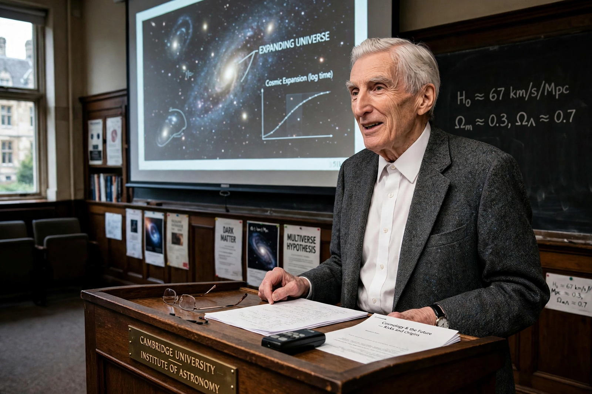

Martin John Rees, Baron Rees of Ludlow (born 23 June 1942) is a British cosmologist and astrophysicist. He was Astronomer Royal from 1995 to 2020, president of the Royal Society from 2005 to 2010, and Master of Trinity College, Cambridge, from 2004 to 2012. His theoretical work illuminated quasars and the cosmic microwave background, and as a science communicator and author — notably of Just Six Numbers (1999) and Our Final Hour (2003) — he has become a prominent public voice on the long-term future of humanity and the risks posed by advanced technology.
| Martin Rees | |
| Born | 23 June 1942, York, England |
|---|---|
| Fields | Cosmology, astrophysics |
| Institutions | University of Cambridge; Institute of Astronomy |
| Offices | Astronomer Royal (1995–2020); President of the Royal Society (2005–2010); Master of Trinity College, Cambridge (2004–2012) |
| Awards | Templeton Prize (2011); Crafoord Prize (2005); Gold Medal of the Royal Astronomical Society (1987); Wolf Prize in Physics (2024, shared) |

Rees served as Astronomer Royal for twenty-five years.
Rees studied mathematics at Trinity College, Cambridge, and completed a PhD in theoretical astronomy under Dennis Sciama in 1967 — just as quasars, pulsars and the cosmic microwave background were revolutionising cosmology. His early papers explained the apparent superluminal motion of quasar jets as a relativistic illusion, modelled the formation of galaxies and the first stars, and explored how small fluctuations in the early universe grew into cosmic structure. As Plumian Professor of Astronomy (from 1973) and director of Cambridge's Institute of Astronomy (1977–1982), he helped build Cambridge into a world centre of theoretical astrophysics. His research interests extend to black holes, gamma-ray bursts, the multiverse hypothesis, and the fine-tuning of physical constants — the "six numbers" of his popular book, whose values appear precisely adjusted to permit a complex universe.
Rees was knighted in 1992 and raised to a life peerage in 2005 as Baron Rees of Ludlow, sitting as a crossbencher in the House of Lords. As president of the Royal Society he championed science communication and policy advice on climate change and energy. A prolific populariser, he has written more than a dozen books, including Before the Beginning (1997), Our Cosmic Habitat (2001), From Here to Infinity (2011), On the Future: Prospects for Humanity (2018) and The End of Astronauts (2022, with Donald Goldsmith).
In Our Final Hour (2003) Rees argued that civilisation's chances of surviving the twenty-first century are no better than fifty-fifty, given nuclear weapons, engineered pandemics, runaway technology and environmental degradation. He co-founded Cambridge's Centre for the Study of Existential Risk (2012) with Huw Price and Jaan Tallinn, serves on the board of the Bulletin of the Atomic Scientists (which sets the Doomsday Clock), and put up a celebrated $1,000 bet that a bioterror or bio-error incident would kill a million people by the end of 2020. In 2011 he received the Templeton Prize for his work on the deepest questions of existence.